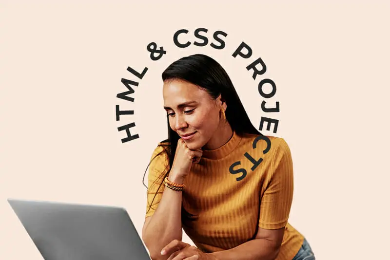

The Best HTML and CSS Projects for Beginners
By Neely Kartha
Add them to your portofolio, practice your skills, and start earning money with HTML & CSS

If you’re a beginner to code and just started learning HTML and CSS, you may be wondering what practice projects you can do to build your portfolio and hone your abilities. You might even ask whether or not you can actually do anything with just these two languages! The good news is that there are many types of projects out there that beginners can use to practice coding, build skills, study, and even start earning money.
The first website I built — the final project of a video lesson series on an online coding platform — was made purely with HTML and CSS. Even though it was a basic static web page for a fake bakery that would never be seen or hosted anywhere, I was thrilled.
I had created something that wasn’t there before, using code. As an English major, using language in this tangible way was new to me, and these languages made it possible. The experience motivated me to continue going — I’m still studying today, even after years of working as a software engineer.
In this article we’ll go over how you can also use HTML and CSS to build projects and explore the tech industry, even if you’re just starting your journey into the tech space.